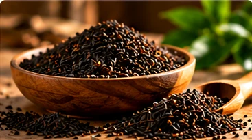
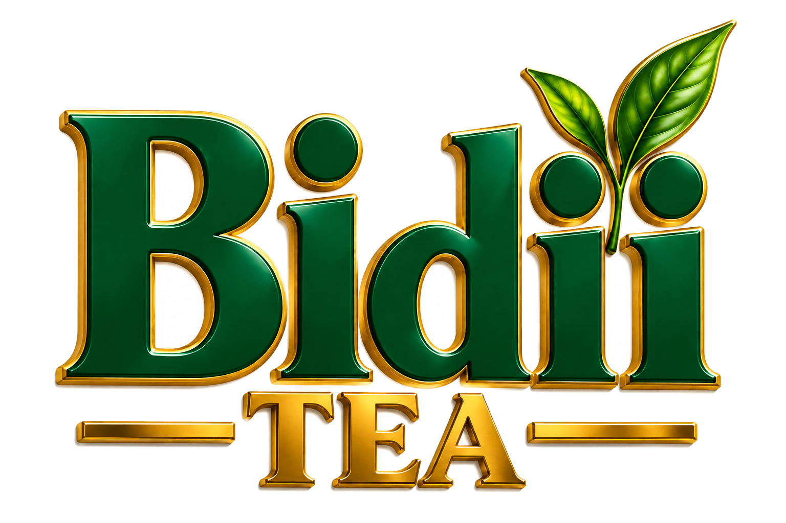
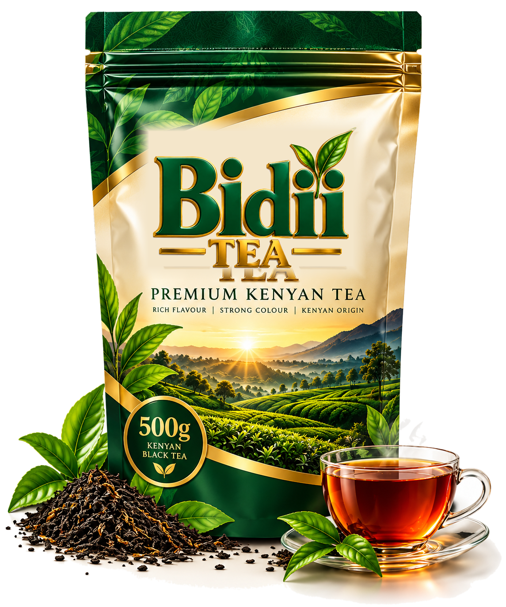
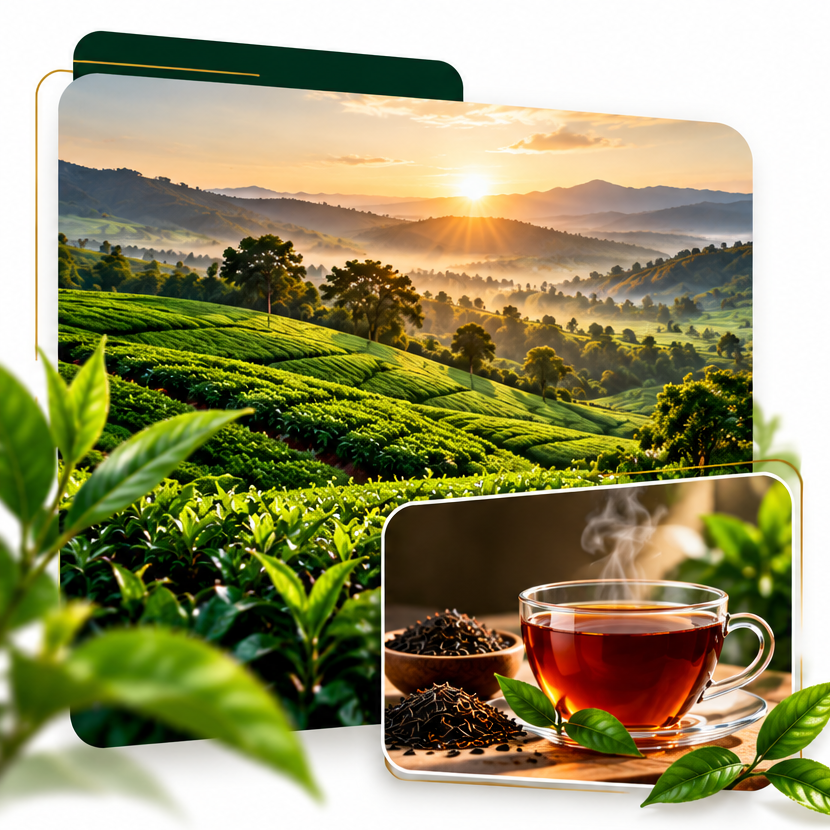
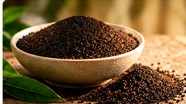
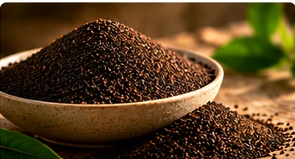
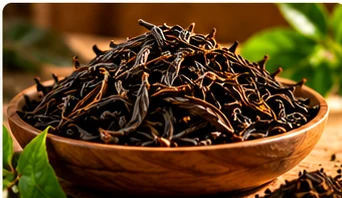
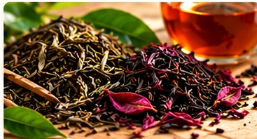
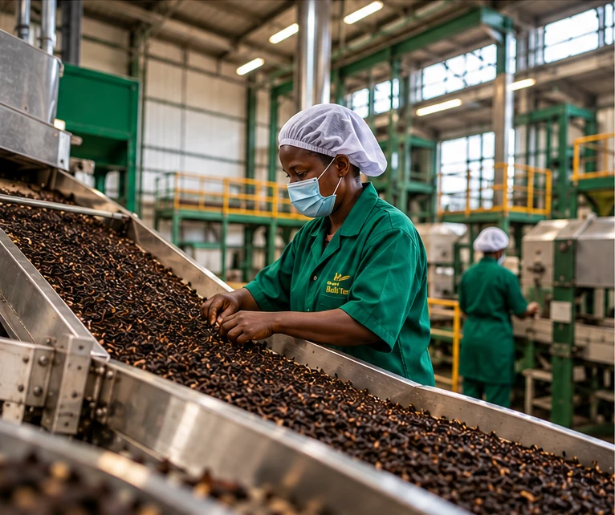

PF1
PEKOE FANNINGS 1
Fine granules, strong flavour and rich liquor. A popular choice for quality blends.
Explore Tea
PREMIUM KENYAN TEA

Premium CTC tea grades, selected orthodox and specialty teas, and direct factory sourcing across Kenya and the East African Community.

WELCOME TO BIDII TEA
At Bidii Tea, we connect the richness of Kenyan tea with local and international markets through quality sourcing, dependable partnerships and a commitment to excellence.
We offer premium Kenyan CTC tea grades, including PF1, BP1, PD and D1, alongside selected orthodox and specialty teas.
Working with KTDA-managed and private tea factories, we provide direct factory access across Kenya and the East African Community.
Discover Our StorySourced from trusted tea factories.
Partnering with KTDA and private factories.
CTC grades, orthodox and specialty teas.
Across Kenya and the East African Community.
OUR TEA COLLECTIONS
We offer premium Kenyan CTC tea grades, alongside carefully selected orthodox and specialty teas. Sourced from KTDA-managed and private tea factories, our teas are selected for quality and consistency.

PEKOE FANNINGS 1
Fine granules, strong flavour and rich liquor. A popular choice for quality blends.
Explore TeaBROKEN PEKOE 1
Well-balanced strength and character, ideal for a refreshing, full-bodied cup.
Explore Tea
PEKOE DUST
Fine particles that produce a robust brew with excellent colour and strength.
Explore Tea

WHOLE-LEAF SELECTIONS
Carefully processed whole-leaf teas with distinctive aroma, flavour and character.
Explore Tea
LIMITED QUANTITIES
Distinctive selections available in limited quantities; please inquire about availability.
Explore Tea
OUR SOURCING ADVANTAGE
We connect buyers with quality tea sourced from KTDA-managed and private tea factories across Kenya and the East African Community. Our Kenyan CTC tea grades — PF1, BP1, PD and D1 — alongside selected orthodox and specialty teas, offer choices for different sourcing needs.
Request a QuoteKTDA-managed and private tea factories across Kenya and the EAC.
Kenyan CTC grades (PF1, BP1, PD, D1) plus selected orthodox and specialty teas.
Tea selections guided by buyer requirements and product specifications.
Working with producers to support local and international sourcing needs.